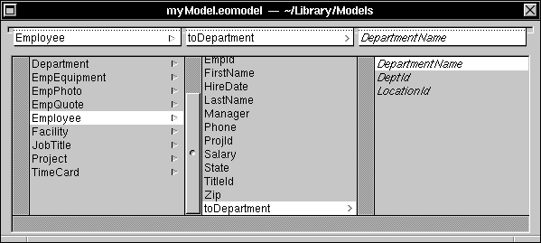
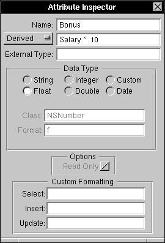

Enterprise Objects Framework Release 1.1 Copyright ©1995 by NeXT Computer, Inc. All Rights Reserved.
| 5 |
Using EOModeler
| You use the EOModeler application to create models. A model defines, in entity-relationship terms, the mapping between a physical database and enterprise object classes.
You use EOModeler to: |
| Read the data dictionary from a database to create a default model, which can then be tailored to suit the needs of your application. | ||
| Specify enterprise object classes for the entities in your model. | ||
| Generate template source code files for the enterprise object classes you specify. |
| A model enables an enterprise object to remain synchronized with a corresponding database row throughout the execution of your application. Models are fully accessible to your application; at run time you can dynamically generate new models or change the mapping in existing models. For information on working with models programmatically, see Chapter 11, "Exploring and Constructing Models."
This chapter describes model files and the EOModeler application. The descriptions here rely heavily on the concepts and terms presented in the Appendix, "Entity-Relationship Modeling." |
| Models |
| Although a model can be generated dynamically at run time, you typically create models using EOModeler and then add them to your project as model files. Model files have an ASCII format and the extension .eomodel.
Models describe the database-to-enterprise object mapping by using the modeling classes EOModel, EOEntity, EOAttribute, and EORelationship (EORelationships include additional information in the form of EOJoin objects). The following table describes the general database-to-object mapping provided in a model: |
| Database Element | Class | |
| Data Dictionary | EOModel | |
| Table | EOEntity | |
| Column | EOAttribute | |
| Row | Enterprise object class (or EOGenericRecord, if a custom enterprise object class is not specified) |
| While the modeling classes correspond to elements in the physical database, a model represents a level of abstraction above the database. Consequently, the mapping between modeling classes and database components doesn't have to be one-to-one. So, for example, while an EOEntity object described in a model file corresponds to a database table, in reality it can contain references to multiple tables. In that sense, it's actually more analogous to a database view. Similarly, an EOAttribute can either correspond directly to a column in the root entity, or it can be derived or flattened. A derived attribute typically has no corresponding database column, while a flattened attribute is added to one entity from another entity. For more information, see "Adding Derived and Flattened Attributes."
You can store your model files in the Models subdirectory of a Library directory, or you can copy them into your application's project directory (for more information, see Chapter 6, "Creating an Enterprise Objects Framework Project"). When the Enterprise Objects Framework searches for a model, it does so by the model's name--in other words, without reference to the file's path or extension. Models in the project directory precede those in the library directories. The search through the libraries is done in this order: The application main bundle, ~/Library/Models, /LocalLibrary/Models, /NextLibrary/Models. |
| EOModeler |
| The EOModeler application is located in the /NextDeveloper/Apps directory and is represented by the icon shown in Figure 13. |
| Figure 13. EOModeler's Application Icon
Launch the application by double-clicking the icon, or by double-clicking an existing model file. |
| Figure 14. The Model File Icon |
| Creating a New Model |
| To create a model: |
| 1. | In EOModeler, choose New from the Model menu. | |
| EOModeler displays a panel prompting you to select an adaptor, as shown in Figure 15. |
| Figure 15. Selecting an Adaptor |
| 2. | Select the adaptor you want to use and click OK. | |
| EOModeler displays the login panel for the database that corresponds to the selected adaptor. The examples in this chapter use the Sybase version of the People database included with the Enterprise Objects Framework; Figure 16 shows the Sybase login panel. |
| Figure 16. Sybase Login Panel |
| When you leave Sybase's Database Server field blank, the default server is used. Characters you type in the Password field are never visible. |
| 3. | Fill in the login panel and click OK. |
| When you first log in to a database, EOModeler uses an adaptor to read the data dictionary from the database and create the original model. This model is displayed in the Model Editor, shown in Figure 17, which lists the entities available for the database you specified in the login panel. |
| Figure 17. The Model Editor
To display the attributes for a particular entity, such as Department, select the entity. The attributes appear in the column to the right of the entity. |
| Using the Model Browser |
| You can use the Model Browser to display the database records associated with an entity in the Model Editor.
To display an entity's records in the Model Browser: |
| 1. | Choose Browse Model from the Tools menu. | |
| EOModeler displays an empty Model Browser. | ||
| 2. | To browse the records associated with an entity, select the entity's name in the Model Editor and drag the "tear-off" in the top left corner of the Model Editor to the tear-off well of the Model Browser, as shown in Figure 18. |
| Figure 18. Dragging an Entity into the Model Browser
The Model Browser fills with data, as shown in Figure 19. |
| Figure 19. The Model Browser Filled with Data
You can rearrange the columns in the Browser by dragging their title tabs to new positions. You can also resize columns by selecting their title tabs and dragging the tab edges until the column is the desired size. You can change the sorting order of the Browser by using the buttons in the lower right corner. By default, the data is displayed according to how it was returned from the database. However, you can sort on the first column in either ascending or descending order by clicking the appropriate sort button. So, for example, to sort the records alphabetically by the employee's last name in the People database, drag the LastName column into the first column of the Browser and click the ascending sort button. To restore the order of the data as it was returned from the database, click the default order button. |
| Inspecting Attributes |
| You use the Attribute Inspector to examine the characteristics of the attributes in your model and make any necessary refinements.
To inspect an attribute: |
| 1. | In the Model Editor window, select an entity in the left-most column to display its attributes. | |
| Attributes are displayed in the column to the right of the selected entity. | ||
| 2. | Select the attribute you want to inspect. | |
| For example, select the Address attribute of the Employee entity. | ||
| 3. | Choose Inspector from the Tools menu. | |
| You can also double-click an attribute to display the Attribute Inspector. |
| Figure 20 shows the Attribute Inspector displaying the characteristics of the Address attribute. |
| Figure 20. The Attribute Inspector
Attribute Names The Name field displays the name your application uses for the attribute. This name doesn't have to be the same as the external name (that is, the name of the corresponding database column). The second text field from the top, known as the Definition field, has a pop-up list which usually reads "Column." This field can contain either the column name of the attribute or a derived name; you set the mode with the pop-up list. For more information on derived attributes, see "Adding Derived and Flattened Attributes." You can change an attribute's public name (that is, the name as it appears in the application), but you shouldn't edit its column name or definition unless you are sure you can predict the outcome. The External Type field displays the data type of the attribute data as it's understood by the database. For example, in Figure 20 the External Type for Address is varchar, a data type used by Sybase.
Data Type The Data Type area lets you specify the data type to which the attribute will be coerced in the Framework. The contents of the Class and Format fields change according to which of the data type radio buttons is selected. The Class field lists the type of object (that is, the value class) to which the selected data type will be "coerced" in Objective C. For example, String becomes NSString, while Float, Integer, and Double all become NSNumber. When a selected data type has an associated format character, it's listed in the Format field (for a custom type, this field contains a string; for example, you can have a custom class MyImage and specify the format string as "TIFF"). For example, Integer has the format character i, while Float has the format character f. The format characters for NSNumber correspond to Objective C typing conventions. When the value class associated with an attribute is NSNumber, the attribute also has a value type, which is the type an NSNumber will be converted to and from by the EOKeyValueCoding methods takeValuesFromDictionary: and valuesForKeys:. A value type is a scalar data type such as int, float, or double. When you generate template source files from a model, class properties are declared with scalar data types where appropriate. For more information on generating template source files, see "Generating Template Source Code Files." For more information on key-value coding, see the EOKeyValueCoding protocol specification in the Enterprise Objects Framework Reference. Select the Custom radio button to specify a custom object class. Custom object classes are initialized with an NSString or NSData object. NSData is a Foundation Kit class that puts an object-oriented wrapper around data of any type. For more information about specifying custom object classes, see the EOCustomValues protocol specification in the Enterprise Objects Framework Reference. The Attribute Inspector has a different appearance when you either inspect a date attribute, or explicitly change an attribute's type to Date. See "Inspecting a Date" for more information.
Options The Options area contains the Read Only checkbox, which indicates whether the data represented by the attribute can be altered by your application. Derived attributes are always read-only. For more information on derived attributes, see "Adding Derived and Flattened Attributes."
Custom Formatting The Custom Formatting area allows you to specify formatting to be used for data conversion when a specified operation (select, insert, or update) takes place. The formatting information is used by the database. The Framework uses the %V (value) format character for insert and update, and %P (property) for select. For example, to specify that when an update occurs you want 5 added to the value of an attribute, type %V + 5 in the Update text field. The statement %V + 5 means "substitute the attribute value for %V and add 5." The Framework performs the substitution, and the resulting string is sent to the database. In other words, the Framework performs no processing on the string besides the substitution. Note: Providing custom formatting can sometimes have the unexpected side-effect of changing the data type of an attribute's value as it's returned from the database. For example, using this field to supply custom formatting for a date can change the date into a string.
Inspecting a Date When you select an attribute whose value is coerced into the Objective C type NSCalendarDate or when you explicitly change an attribute's type to Date, you can use the Attribute Inspector to modify how the date is displayed in your application. To change the format of a date: |
| 1. | Select an attribute that represents a date value, or change the data type of an attribute to be Date. | |
| For example, the Employee entity in the People database has a HireDate attribute. | ||
| 2. | Double-click the attribute to display the Inspector, as shown in Figure 21. |
| Figure 21. Inspecting a Date
When you inspect a date, the Data Type area in the Attribute Inspector changes to include options for setting a date format and specifying time zones.
Setting a Date Format The Date Format field allows you to change the format of a date by editing the format characters. Each format character represents a particular component of a date: |
| %d -- day | ||
| %b -- month | ||
| %Y -- year | ||
| %H -- hour | ||
| %M -- minute |
| See the NSCalendarDate class specification in the Foundation Kit Reference for a complete listing of all available format characters.
For example, to cause dates in your application to use the format Day-Month-Year and omit the hour and minutes, edit the Date Format field to contain the text %d-%b-%Y. The text below the Date Format field displays the current date using the specified format. So if you make the described edits to the date May 22, 1994, the text below the Date Format field changes to read 22-May-1994. Note: A date format is also used for parsing edited dates. Be sure to design your application so that users know the correct format for date entry.
Setting Time Zones Set a Client Time Zone or a Server Time Zone by clicking the corresponding Set button. EOModeler displays the Time Zone panel. |
| Figure 22. Setting the Time Zone
Setting different client and server time zones is useful, for example, if the server is in a different time zone, and you want your application to use local time. You set a time zone by dragging the selector (the highlighted vertical band superimposed on the map) across the world map to the region for which you want to set a time zone. Alternatively, you can click on the region of the map for which you want to set a time zone. The pop-up list at the top of the panel lists the settings available for the current selection. |
| Forming a Relationship |
| You can use the Model Editor to form a relationship between entities. This relationship must reflect an actual relationship between the entities' corresponding tables in the database.
Forming a relationship allows you to access data in a destination table that relates to data in a source table (it's also possible to have a reflexive relationship, in which the source and destination tables are the same). For example, to find the name of the department for which each employee works, you can form a relationship between the Employee and Department entities. Note: When you fetch an enterprise object that maps to an entity, EOFault objects are created for the properties that represent relationships. An EOFault "stands in" for an enterprise object (or an array of enterprise objects) that hasn't yet been fetched from the database. When an object that has relationships is fetched, EOFaults are created for the values of those relationships (unless the corresponding objects have already been fetched and uniqued). The real objects are only fetched when you explicitly access them. For more information, see Chapter 2, "From Database to Objects." To form a relationship: |
| 1. | Select a source entity in the Model Editor, such as Employee. | |
| 2. | Choose Add Relationship from the EOModeler Property menu. | |
| The text "toRelationship" appears in the second column with a single arrow. A single arrow denotes a to-one relationship. This is the default notation; you need to change it if the two entities have a to-many relationship (for example, a facility has many departments). When you define a relationship between two entities, make sure it reflects the actual relationship as defined in the database. | ||
| A to-one relationship must always have exactly one row in the destination entity. For relationships that can have zero or more than one row in the destination entity, use a to-many relationship. You specify the cardinality of a relationship (that is, whether it is to-many or to-one) in the Relationship Inspector. | ||
| 3. | Double-click "toRelationship" to display the Relationship Inspector, as shown in Figure 23. |
| Figure 23. Forming a Relationship |
| You use the Relationship Inspector to specify information about the relationship, such as whether it's to-one or to-many, its semantics (that is, the type of join represented by the relationship), and the operator used in the join statement.
When you use the Relationship Inspector, remember that the settings you define must reflect the corresponding implementation in the database, as well as the features supported by your adaptor. EOModeler doesn't know, for example, if a relationship is to-one or to-many, or if your adaptor supports left outer joins. You need to know your database and your adaptor, and specify relationships accordingly. In addition, to-one relationships must use the primary key (or a candidate primary key) of the destination entity as the join component. |
| 4. | In the Inspector, select the source attribute (DeptID) in the upper right column. | |
| Typically, you form a relationship by connecting a primary key in one entity and a corresponding foreign key in another entity. In a to-one relationship, the source entity usually holds the foreign key, while the destination entity holds the primary key. For example, DeptId is a foreign key for Employee, while it's a primary key for Department. | ||
| 5. | Select the destination entity (Department) in the lower left column to display its associated attributes (in the lower right column). | |
| 6. | Select the destination attribute (DeptId) in the lower right column, and click Connect. | |
| The name of the relationship changes to be "toDepartment". By default, EOModeler names relationships after the destination entity, prefixed by "to". You can edit this name if desired. | ||
| 7. | In the Model Editor, select the relationship to display the properties associated with the destination entity (DepartmentName, DeptID, and LocationID), as shown in Figure 24. EOModeler italicizes properties that are accessed through a relationship. |
 |
| Figure 24. Making the Connection
Adding Derived and Flattened Attributes The Enterprise Objects Framework supports three different kinds of attributes: simple, derived, and flattened. A simple attribute corresponds to a single column in the root table of the entity, and may be read or updated directly from or to the database. A derived attribute doesn't map directly to a single column in the root table of the entity. For example, a derived attribute can be based on another attribute that's modified in some way, such as an attribute Bonus that's the result of a calculation performed on a Salary attribute. A derived attribute can also be an aggregate consisting of more than one attribute; for example, you can create a derived attribute FullName that is an aggregate of LastName and FirstName. Derived attributes, since they don't correspond to real values in the database, are read-only; it makes no sense to write a derived value. A flattened attribute is a special kind of derived attribute that you effectively add from one entity to another by traversing a relationship. For example, when you form a relationship between two tables such as Employee and Department (as described in the previous section), you can add attributes from Department to Employee, such as the attribute DepartmentName. This is called "flattening" an attribute. Flattening an attribute is equivalent to creating a joined column; it allows you to create objects that extend across tables. Note: To flatten an attribute, the relationship you traverse must be a to-one relationship. To flatten an attribute: |
| 1. | In the Model Editor, select the relationship that gives you access to the attribute you want to add to your entity. | |
| For example, to add the name of an employee's department to Employee, you can traverse the toDepartment relationship and add the department name (DepartmentName) to Employee as a flattened attribute. | ||
| 2. | Select the attribute you want to add (DepartmentName), and choose Flatten Property from the Property menu. |
|  |
| Figure 25. Adding a Flattened Attribute |
| The derived attribute (in this example, toDepartment_DepartmentName) appears in the list of properties for Employee. The format of the name reflects the traversal path: the attribute DepartmentName is added to Employee by traversing the toDepartment relationship. |
| 3. | Double-click the derived attribute (toDepartment_DepartmentName) to examine its characteristics in the Inspector. |
| Figure 26. Examining a Flattened Attribute in the Attribute Inspector |
| In the Attribute Inspector, the pop-up list to the left of the Definition field identifies the attribute as "Derived". |
| 4. | Edit the Name text field to simplify the attribute name (for example, to "Department"). | |
| The Definition field (the second text field from the top of the Attribute Inspector) must accurately reflect the attribute's external name and the table in which it resides. For example, if you edit its text to be "Department" and change its mode to "Column," it no longer maps to an existing attribute. In other words, only edit this field if you are sure you can predict the outcome. |
| To display the result of creating this flattened attribute, drag a selection of the Employee entity's attributes into the Model Browser, as shown in Figure 27. Notice that the Browser includes a column for the flattened attribute Department. |
| Figure 27. Using the Browser to Check Your Model
Displaying data associated with your model in the Browser is a good way to check that the model is synchronized with the database. If your model is out of sync with the database (for example, if you try to implement a relationship for which there is no corresponding relationship in the database), attempting to display data in the Browser will fail.
Adding a New Attribute You can use the concept of derived attributes to add to an entity a new attribute that doesn't correspond to any database column. This attribute can contain a computed value, for example, or an aggregate of multiple attributes. To add a new attribute to your entity: |
| 1. | In the Model Editor, select the entity (such as Employee) to which you want to add an attribute. | |
| 2. | Choose Add Attribute from the Property menu. | |
| A new attribute with the default name "Attribute" appears in the entity's list of attributes. | ||
| 3. | In the Attribute Inspector, edit the Name field to supply a new name for the attribute. | |
| For example, you can create an attribute called Bonus that uses each employee's salary to calculate a bonus. | ||
| 4. | Use the pop-up list to the left of the Definition field to change the attribute type from Column to Derived. | |
| 5. | Edit the Definition field to supply the SQL needed to specify the derived attribute. | |
| To give all employees a 10% bonus, supply the text Salary * .10. | ||
| 6. | Use the Data Type field to specify a data type for the new attribute, such as float. |
| Figure 28 shows the Attribute Inspector with the new attribute Bonus specified. |
|  |
| Figure 28. Adding an Attribute
The text you supply in the Definition field must be valid SQL for your database. For example, you can add an attribute with the format "LastName, FirstName". The syntax for Sybase and Oracle is: |
| Sybase | Oracle | |
| LastName+', `+FirstName | LAST_NAME||', '||FIRST_NAME |
| While you can use either the internal or external names for simple attributes in this field, for derived and flattened attributes you have to use the internal names (flattened and derived attributes have no external names). For consistency's sake, you may want to use only internal names in this field.
Adding Flattened Relationships In addition to flattening attributes, you can also flatten relationships. Flattening a relationship gives a source entity access to relationships that a destination entity has with other entities. It's equivalent to performing a multi-table join. Note that flattening either an attribute or a relationship can result in degraded performance when the destination objects are accessed, since traversing multiple tables makes fetches slower. To flatten a relationship: |
| 1. | Add a relationship from one entity (entity_1) to a second entity (entity_2). | |
| For example, you can add a to-many relationship from Facility to Department. | ||
| 2. | Add a relationship from entity_2 to a third entity (entity_3). | |
| For example, you can add a to-many relationship from Department to Employee. | ||
| 3. | From entity_1, select the relationship to entity_2 to display its properties. | |
| In this example, from Facility select toDepartment to display the properties of Department. | ||
| 4. | In the list of properties for entity_2, select the relationship (toEmployee) you want to flatten and choose Flatten Property from the Property menu. | |
| The flattened relationship (in this example, toDepartment_toEmployee) appears in the list of properties for Facility. The format of the name reflects the traversal path: The relationship toEmployee is added to Facility by traversing the toDepartment relationship. | ||
| To-many relationships are denoted by a double arrow, as shown in Figure 29. |
| Figure 29. Flattening a Relationship |
| Working With Entities |
| Once you've refined your model, you're ready to specify enterprise object classes for the entities in the model. There are two stages to specifying an enterprise object class in EOModeler: |
| Using the Entity Inspector to set the characteristics of an entity and define the mapping between the entity and your enterprise object class. | ||
| Optionally, generating template source files for the enterprise object class you specified in the Inspector. |
| Inspecting an Entity
You use the Entity Inspector to set an entity's characteristics and specify a mapping between the entity and an enterprise object class. To inspect an entity, double-click it to display the Entity Inspector. Figure 30 shows the Entity Inspector for the Employee entity. |
 |
| Figure 30. The Entity Inspector
Entity Names The Name field lists the name your application uses for the entity. The External Name field contains the name of the root table in the database. You can change the internal name (that is, the name as it appears in the application), but you shouldn't change the external name unless you are sure you can predict the result. The External Query field allows you to specify any SQL statement that will be executed as is (that is, you can't perform any substitutions). This can be a stored procedure. The columns selected by this SQL statement must be in alphabetical order by internal name, and must match in number and type with the class properties specified for the entity. For more information on external queries, see the EOEntity specification in the Enterprise Objects Framework Reference.
Options The Options area contains the Read Only checkbox, which indicates whether the data that's represented by the entity can be altered by your application.
Class The Class field initially contains the text "EOGenericRecord". This is because the default enterprise object class is an EOGenericRecord. An EOGenericRecord: |
| Knows the entity on which it is based. | ||
| Carries its properties as a dictionary. | ||
| Implements the EOKeyValueCoding protocol. |
| To specify a custom class, type the name of the class in this field. For more information on EOKeyValueCoding and creating custom classes, see "Specifying an Enterprise Object Class."
Properties The Properties area lets you specify the properties you want to include in your enterprise object class and set characteristics for them. There are three columns in this area. Each column displays the status of a particular setting: Primary Key, Used For Locking, and Class Property. Icons are used to indicate that a setting is enabled for a particular property; the dash icon indicates that a setting is not applicable to a property. You add and delete icons by clicking the appropriate column next to the property. |
| The Primary Key column is used to declare whether a property is, or is part of, the primary key for the enterprise object class. To create a compound primary key, you simply add a Primary Key icon to the column for each property you want to include in the primary key. | ||
| Adding a primary key to your enterprise object class is mandatory; the primary key is the means by which an enterprise object is uniquely identified within your application and mapped to the appropriate database row. | ||
| The Used For Locking column indicates whether an attribute should be used for locking when an update is performed. This setting applies when you use optimistic locking. If you set Used For Locking for an attribute whose data is a BLOB type, it can have an adverse effect on system performance. By default, the Entity Inspector sets all of an entity's attributes to be used for locking. | ||
| The Class Property column is used to indicate properties that meet both of these criteria: You want to include them in your class definition, and they can be fetched from the database. By default, the Entity Inspector sets all of an entity's properties as belonging to your class; you can remove a property by clicking its Class Property icon. If you define an attribute that doesn't exist in the database but is used by your application (such as a status flag), you should remove its Class Property icon; note that generated template source files won't include instance variable declarations for these attributes--you'll have to type those in by hand. If you don't remove the Class Property icon for an attribute that has no corresponding database value, it will result in a server error when your application attempts to fetch the property from the database. | ||
| The only properties an enterprise object must include to be viable are those properties (or property) that define a primary key. Only properties you include in the class will be sent to the enterprise object through key-value coding. Relationships you include as class properties will have EOFaults created for them when you perform a selection on objects that map to the entity. |
| Specifying an Enterprise Object Class
Specifying an enterprise object class for an entity applies the mapping defined in your model to your custom class, thereby enabling objects of the class to remain synchronized with corresponding database rows. For a more detailed discussion of creating enterprise object classes, see Chapter 4, "Designing Enterprise Objects." To specify the enterprise object class for an entity: |
| 1. | Determine the properties from the entity that you want to include in your enterprise object class; every property you want to include should have a corresponding Class Property icon set for it. | |
| 2. | Add a Primary Key icon for the property or properties that constitute the entity's primary key. | |
| Remember that the primary key or keys you set for your enterprise object class must mirror the primary key or keys defined for the corresponding table in the database. |
| What you do after this point depends on how you plan to implement your enterprise object class. Note that in all cases, an enterprise object class must conform to the informal protocol EOKeyValueCoding, which specifies methods for accessing values associated with keys ("keys" in this context relates to key-value pairs, not to primary keys). But this can be accomplished very differently, depending on the approach you use.
You can do any one of the following, depending on the needs of your application: |
| Use EOGenericRecord. | ||
| If you don't edit the Class field to specify a name for a custom class, the Framework uses EOGenericRecord as an enterprise object class by default. A generic record uses a dictionary to store key-value pairs that correspond to an entity's properties and the data associated with each property. Generic records implement the key-value coding methods takeValuesFromDictionary: and valuesForKeys:. Use EOGenericRecord when you don't need to define special behavior for your class. | ||
| To use EOGenericRecord, simply leave the text "EOGenericRecord" in the Class field in the Entity Inspector. | ||
| Create a custom class that includes its own implementation of key-value coding (that is, that provides its own takeValuesFromDictionary: and valuesForKeys: methods). If you plan to create a custom class, you must type its name in the Class field. | ||
| Create a custom class that uses the default implementation of key-value coding. If you plan to create a custom class, you must type its name in the Class field. | ||
| If your class doesn't implement takeValuesFromDictionary: and valuesForKeys:, the default NSObject or Object implementation is used, as described in Chapter 4, "Designing Enterprise Objects." |
| If you generate template source files for your class, the resulting header and implementation files include definitions of instance variables and accessor methods that can be used by key-value coding. See "Generating Template Source Code Files."
For more information on key-value coding, see the EOKeyValueCoding protocol specification in the Enterprise Objects Framework Reference.
Figure 31 shows the Model Editor and the Entity Inspector after the primary key and properties have been set. |
| Figure 31. Specifying a Class for an Entity
In Figure 31, note that: |
| The names of the entity's attributes have been edited to be lowercase. The names that you provide for entities and attributes in your model is a matter of personal preference; the model names need not match the external database names for the mapping to be valid. | ||
| In the Inspector, the property empId has been designated as the enterprise object class's primary key. | ||
| For the flattened attribute department, the Inspector automatically displays the Not applicable icons in the Primary Key and Used For Locking columns. |
| Generating Template Source Code Files |
| Once you finish specifying an enterprise object class, you can generate template source code files for it. However, at this stage of the development process, you may want to first create your project and design your application's user interface in Interface Builder. Once you've created a project using Project Builder and included a model file in it, you can generate your template source files and include them directly into the project. For more information on using Project Builder and Interface Builder, see Chapter 6, "Creating an Enterprise Objects Framework Project."
Generating template files produces: |
| A header (.h) file that declares instance variables for all of the class properties you specified in the Inspector, and accessor methods for those instance variables. | ||
| In the header file, instance variables that correspond to attributes are declared with the type that was specified for them in the Attribute Inspector. This can be an NSString, an NSCalendarDate, a scalar type such as an int or float, or a custom data type. Instance variables that represent relationships are declared to be of type id. | ||
| An implementation (.m) file that provides basic implementations for the accessor methods. |
| To generate template source code files for your enterprise object class: |
| 1. | In the Model Editor, select the entity for which you have specified a class in the Entity Inspector. | |
| EOModeler only permits you to create template source files for entities for which you have specified a custom enterprise object class. In other words, you can't generate template files for EOGenericRecord. | ||
| 2. | Choose Create Template from the Property menu. | |
| EOModeler displays a Choose Directory panel. If you opened the model file from Project Builder, the Choose Directory panel displays the project as the default destination. | ||
| 3. | Choose a destination, supply a name for the files if you wish, and click OK. | |
| If you don't supply a name, the template files are named after the enterprise object class for which they are being generated and are given the appropriate extensions. | ||
| If you opened the model file from a project, an additional panel appears, confirming that you want to insert the files in your project. |
| The files are generated in the specified location.
For example, suppose you define an enterprise object class Employee that includes the properties empID, firstName, hireDate, lastName, department, and toDepartment. The header file generated for this class is as follows: |
 // Employee.h
// Employee.h
 //
//
 // Created on Mon Aug 08 18:10:19 PDT 1994 by NeXT EOModeler.app
// Created on Mon Aug 08 18:10:19 PDT 1994 by NeXT EOModeler.app
 #import <eoaccess/eoaccess.h>
#import <eoaccess/eoaccess.h>
 @interface Employee : NSObject
@interface Employee : NSObject
 {
{
 NSString *department;
NSString *department;
 int empId;
int empId;
 NSString *firstName;
NSString *firstName;
 NSCalendarDate *hireDate;
NSCalendarDate *hireDate;
 NSString *lastName;
NSString *lastName;
 id toDepartment;
id toDepartment;
 }
}
 #ifdef ACCESSOR_METHODS
#ifdef ACCESSOR_METHODS
 - (void)setDepartment:(NSString *)value;
- (void)setDepartment:(NSString *)value;
 - (NSString *)department;
- (NSString *)department;
 - (void)setEmpId:(int)value;
- (void)setEmpId:(int)value;
 - (int)empId;
- (int)empId;
 - (void)setFirstName:(NSString *)value;
- (void)setFirstName:(NSString *)value;
 - (NSString *)firstName;
- (NSString *)firstName;
 - (void)setHireDate:(NSCalendarDate *)value;
- (void)setHireDate:(NSCalendarDate *)value;
 - (NSCalendarDate *)hireDate;
- (NSCalendarDate *)hireDate;
 - (void)setLastName:(NSString *)value;
- (void)setLastName:(NSString *)value;
 - (NSString *)lastName;
- (NSString *)lastName;
 - (void)setToDepartment:value;
- (void)setToDepartment:value;
 - toDepartment;
- toDepartment;
 #endif
#endif
 @end
@end
| Note that: |
| Instance variables are declared to be of the type specified in the model. For example, empID is declared as an int, hireDate is declared as an NSCalendarDate, and the flattened attribute department is declared as an NSString. Instance variables that represent relationships (such as toDepartment) are always declared to be of type id. | ||
| Accessor methods are conditionally included in both the header (.h) and implementation (.m) files using an #ifdef statement. |
| Remember that if there is a possibility that the database column corresponding to a scalar type instance variable can have a NULL value, the instance variable and accessor methods should be declared with type id to accommodate either an EONull or an NSNumber.
The implementation (.m) file includes an implementation for each of the accessor methods. For example, the methods for setting and returning the value of the instance variable firstName are: |
 - (void)setFirstName:(NSString *)value
- (void)setFirstName:(NSString *)value
 {
{
 [firstName autorelease];
[firstName autorelease];
 firstName = [value retain];
firstName = [value retain];
 }
}
 - (NSString *)firstName { return firstName; }
- (NSString *)firstName { return firstName; }
| Note that the setFirstName: method uses the allocation and deallocation scheme defined in the Foundation Kit. For more information, see the Foundation Kit Reference. |
| Setting Adaptor Information |
| In addition to describing modeling objects, a model includes a connection dictionary, which contains the information needed to connect to a database server. The keys of the connection dictionary identify the information the server expects, and the values associated with those keys are the values that the adaptor tries when logging into the database.
The dictionary keys required by the Oracle, Oracle7, and Sybase adaptors are: |
| Oracle Adaptors | Sybase Adaptor | |
| hostMachine | hostName | |
| serverID | databaseName | |
| userName | userName | |
| password | password |
| When you initialize an adaptor from a model, any connection information stored with the model is copied into the adaptor object.
The connection dictionary contains the last values you entered in the login panel and saved as a part of your model (so long as you haven't manually edited the connection dictionary in your model file). You can change the connection dictionary's values from EOModeler; this is called setting adaptor information. To set adaptor information: |
| 1. | Choose Set Adaptor Info from the Model menu. | |
| EOModeler displays a login panel that contains values taken from the model's connection dictionary. | ||
| 2. | In the login panel, make the edits you want reflected in your connection dictionary, and click OK. | |
| For example, if you specified a user name and password to log into a database and create your model, you can remove that information from the connection dictionary by clearing those fields in the login panel. Then, in your application, you can prompt the user for a user name and password by sending a runLoginPanelAndValidateConnectionDictionary message to your adaptor object. |
| If you logged into a database as shown in the login panel in Figure 16, the connection dictionary in your model file would be as follows: |
 connectionDictionary = {databaseName = People;
connectionDictionary = {databaseName = People;
 hostName = "";
hostName = "";
 password = "";
password = "";
 userName = sa; };
userName = sa; };
| If you edit the login panel as shown in Figure 32, the connection dictionary changes to be: |
 connectionDictionary = {databaseName = People;
connectionDictionary = {databaseName = People;
 hostName = myServer;
hostName = myServer;
 password = "";
password = "";
 userName = ""; };
userName = ""; };
| Figure 32. Setting Adaptor Information |
| Checking for Consistency |
| EOModeler provides consistency checking to confirm that your model is valid. A valid model is one in which there are no entities without primary keys, and no relationships without join components. Further, consistency checking is invoked when you attempt to make a change in one part of the model that would invalidate another part of the model (for example, if you try to delete an element that's referenced elsewhere).
You can explicitly check your model at any point by choosing Check Consistency from the Model menu. If no inconsistencies are found in your model, the Consistency Check panel is not displayed. Consistency checking is also invoked automatically whenever you perform certain operations. These operations and the associated checks that EOModeler performs are described in the following table: |
| When you attempt to... | EOModeler checks for... | |
| Save the model | Entities without primary keys Relationships without join components | |
| Delete an entity | References other entities may have to any aspect of this entity (for example, to its attributes) | |
| Delete an attribute | References to this attribute anywhere else in the model | |
| Delete a relationship | References to this relationship anywhere else in the model | |
| Change relationship | References to this relationship anywhere else in the model | |
| cardinality from to-one | (for example, in flattened attributes or flattened | |
| to to-many | relationships) |
| When a consistency check occurs and inconsistencies are found, the Consistency Check panel appears with a list of diagnostic messages, as shown in Figure 33. |
 |
| Figure 33. Checking for Consistency
By default, consistency checking is performed whenever you save a model file. You can change this behavior with the Preferences panel. |
| Deleting Elements from the Model |
| You can delete entities and attributes from your model, as well as any relationships or flattened properties you've added. Even after you delete entities and attributes, you can examine them and restore them to your model; this is accomplished by using the Table Panel (described in the following section). However, if you add a relationship or flattened property to the model and then delete it, it can't be recovered using the Table Panel.
To delete elements from the model: |
| 1. | Select the element or elements you want to delete. | |
| 2. | Choose Delete from the Edit menu. |
| Using the Table Panel |
| When you open the Table Panel in EOModeler, it reads the data dictionary from the database and displays all of the available entities and attributes (doing this doesn't overwrite your existing model). This display includes entities and attributes that you may have previously deleted from your model, as well as ones that have been added to the database since your model was originally created. You can use the Table Panel to add to your model any entities or attributes it doesn't currently contain.
To see all of the entities and attributes currently available from the database: |
| 1. | Choose Table Panel from the Tools menu. | |
| EOModeler displays the Table Panel, which lists all of the entities and their attributes, as provided by the data dictionary. |
| Figure 34. The Table Panel |
| 2. | Select any entities you want to add to your model, and click Transfer. | |
| The entity and all of its attributes are added to your model. To add attributes to your model (such as attributes that were previously deleted), select the corresponding entity in the Table Panel and click Transfer. The attributes are added to your model and merged with the attributes your model already contains. | ||
| Clicking Fetch re-fetches the entities from the database. |
| Note: When you use Transfer in the Table Panel, it uses the internal (public) names of entities and attributes for identification, not the external names by which they are known in the database. So, for example, if you had an attribute called EmpID, changed its public name to be employeeID, and then performed a Transfer on its entity, Table Panel would transfer EmpID to the Model Editor. Then both employeeID and EmpID would appear in the Model Editor. |